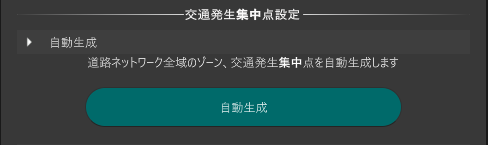

交通集中発生点設定機能
本機能は、シミュレーション用の道路ネットワークに交通発生・集中のポイントを設定するための機能です。
交通集中発生点は、車両が到着（集中）したり出発（発生）したりするポイントであり、ゾーンを用いて交通需要を予測します。

事前準備
PLATEAU SDK for Unity により都市モデルをインポートし、道路ネットワークの生成・整備を行っておく必要があります。
UnityのメニューバーからPLATEAU-交通シミュレータを選択し交通シミュレータウィンドウを開き交通集中発生点設定タブを選択します。
利用手順
ゾーンの生成
自動生成をクリックする、おおまかな街区ごとにゾーンと道路ネットワーク端部の交通集中発生点を自動で生成できます。

生成完了後、ゾーン（青色の形状）と端部の交通集中発生点（赤色の形状）が生成されます。

ゾーンの選択
ゾーン上のアイコンをクリックすると、ゾーンが選択されてハイライトされます。

ゾーンに属する建築物の登録・解除
ゾーンを選択し、ハイライトされた建物をクリックすると、ゾーンに属する建物を登録・解除できます。
登録中

解除

ゾーンに属する交通集中発生点の登録・解除
ゾーンを選択し、交通発生集中点のアイコンをクリックすると、交通集中発生点を登録・解除できます。
登録中

解除

ゾーン形状の編集
ゾーンの形状を変更するにはProBuilderを使用します。セットアップについてはUnityのページを参照してください。
ゾーンを選択します。

ProBuilderウィンドウを表示しVertex Selectionを選択します。

ゾーン外周の頂点にフォーカスすると操作点が表示されます。

操作点をクリックするとギズモが表示され、移動することで形状を変更できます。
ゾーンの結合
Ctrlキーを押下したまま複数のゾーンを選択します。

結合をクリックすることでゾーンを結合することができます。
ゾーンの追加
追加をクリックします。

ハイライトされた建築物を選択すると建築物の形状で新しいゾーンが追加されます。
シーン上で右クリックすると追加をキャンセルできます。


ゾーンの削除
削除したいゾーンを選択します。

削除をクリックすることでゾーンを削除することができます。